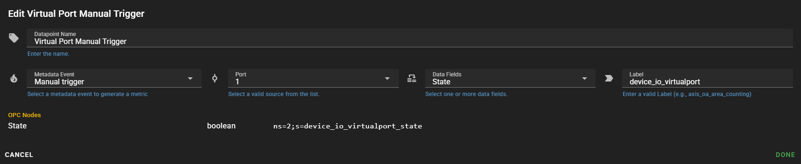
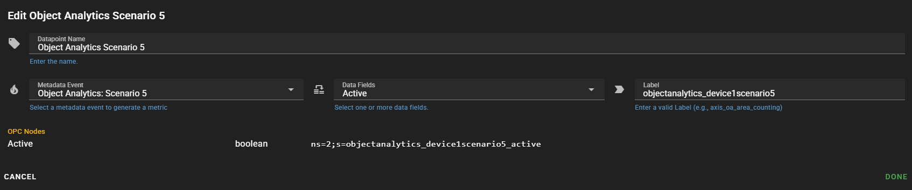

Metadata Dispatch Configuration
The MetaDispatch feature acts as a unified gateway for forwarding metadata and metrics to various services or SD-Card. It supports multiple sink types:
- InfluxDB (Time-series database)
- MQTT
- OPC UA
- SD-Card
- SQL Databases (via MySQL, PostgreSQL, SQL Server)
- Webserver (RESTful interfaces)
Common Data Fields
Regardless of the connection type, each data record includes the following elements:
-
Measurement Name
A string identifier for the metric/metadata (e.g.,"cpu_usage","disk_usage","metadata"). -
Tags
A key-value map (string pairs) providing contextual metadata.
Example:
-
Fields: A key-value map containing the actual metric values or metadata information. Field types include numbers, booleans, and strings.
Example:
- Timestamp
Indicating when the data was recorded.
InfluxDB
-
Data Format Overview:
Data is sent to InfluxDB as points that comprise a measurement name, tags, fields, and a timestamp.- Example Point (Line Protocol): cpu_usage,mac=00:11:22:33:44:55 usage_percent=75.5 1640995200000000000
-
Implementation Details:
- Measurement: Directly corresponds to the metric name.
- Tags: Provided as a JSON object that InfluxDB converts into tags.
- Fields: Key-value pairs are stored as InfluxDB fields.
- Timestamp: A
time.Timevalue from Go is used as the measurement’s timestamp.
SD-Card
-
Clear Event:
Select a clear event to delete records that are older than the configuredMax Hourswhen the trigger occurs. -
Max Hours:
Records older than this value will be deleted when the clear event triggers.
Manual Clean-UP
Via the red CLEAN-UP button, all stored records could be removed/deleted.
Download CSV/JSON
You can download all stored events and metrics as a CSV or JSON.
Get CSV via HTTP
To retrieve CSV data from the camera’s HTTP interface, you must use HTTP Digest Authentication and send a GET request to the /local/ax_msf/ax_msf/sdcsvstream endpoint.
Get JSON via HTTP
To retrieve CSV data from the camera’s HTTP interface, you must use HTTP Digest Authentication and send a GET request to the /local/ax_msf/ax_msf/sdjsonstream endpoint.
Important
In case of our ACAP Application is not running or other camera related issue, camera webserver may return with 400, or 500 HTTP Status Codes, our ACAP runs as reverse proxy, so also handle this kind of errors.
SD-Card Cache (Resilient Buffer)
Description:
Harness the SD-Card as a local buffer when network connectivity drops. Metrics are cached on the card and automatically flushed to the configured sink once connectivity is restored.
Configuration Options
-
Use SD-Card cache
Enable or disable local buffering on the camera’s SD-Card. When enabled, any failed metric writes are stored on the card and retried once connectivity is restored. -
Cache Size (Entries)
Maximum number of metric records to keep on the SD-Card before older entries are purged. Adjust based on your card capacity and expected outage duration.
Live Statistics
Once caching is enabled, two live metrics appear:
-
Cache entries
Shows the current number of records waiting in the cache. -
Average insert time
Displays the average time (in ms) to write a record to the cache.
Click the “reload” button next to these stats to refresh their values at any time.
How It Works
-
Failure detection:
If a metric write to your configured sink (InfluxDB, MQTT, etc.) fails, the system writes the data to the SD-Card cache instead of dropping it. -
Background flush:
Every few seconds, the dispatcher checks for cached entries and attempts to resend them to the sink in FIFO order. Successfully sent entries are removed from the cache. -
Automatic pruning:
When the cache grows beyond your configured maximum, the oldest entries are deleted to make room for new ones, ensuring the cache never exceeds the specified size.
MQTT
Version: v3.1.1
QoS Level: 1
Note
Our MQTT Client operates at QoS 1. In case of a failure, outgoing messages will be cached via the SD-Card cache and retried.
Supported Features
- TLS / Plain TCP
Supports bothtcp://andtls://broker URIs. - Authentication
- Username/Password
- Clean Session & Auto-Reconnect
- JSON Payload
Each message is a JSON object containingmeasurement,tags,fields, andtimestamp. - Timeouts
Connect timeout: 5 s
Publish timeout: 5 s
General Settings
-
Broker URI
Enter the MQTT broker address in one of these formats:tcp://your-broker.example.com:1883tls://192.168.0.80:8883
-
Base Topic
Prefix for all MQTT messages (e.g.camera/metrics) -
Client ID
Unique identifier for this MQTT connection (e.g.camera-01)
Authentication (Optional)
-
Username
MQTT username, if broker requires authentication -
Password
MQTT password, if broker requires authentication
Topics
All MQTT topics are published under
{base_topic}/{topic}. Replace{base_topic}with your configured base topic.
| Topic | Metric Struct | Description |
|---|---|---|
{base_topic}/cpu_usage |
CpuMetrics |
Instantaneous CPU usage percentage |
{base_topic}/cpu_times |
CpuMetrics |
Breakdown of CPU times (user, system, idle, etc.) |
{base_topic}/cpu_load_average |
CpuMetrics |
System load averages over 1, 5, and 15 minutes |
{base_topic}/disk_usage |
DiskMetrics |
Disk usage stats per partition (disk_total, disk_used, etc.) |
{base_topic}/net_io |
NetworkMetrics |
Network I/O counters per interface (bytes, packets, errors) |
{base_topic}/optics |
OpticMetrics |
Optic module metrics (focus position, zoom, IR filter state, etc.) |
{base_topic}/power |
PowerMetrics |
Power metrics (current, average, max, PoE classes) |
{base_topic}/proc |
ProcessMetrics |
Per‐process CPU & memory metrics (cpu_percent, rss, etc.) |
{base_topic}/ptz |
PTZMetric |
PTZ movement & camera parameters (pan, tilt, zoom, focus) |
{base_topic}/swap_usage |
SwapMetrics |
Swap memory statistics (total, used, free, usage percent) |
{base_topic}/uptime |
UptimeMetrics |
System uptime |
{base_topic}/vmem_usage |
VMMetrics |
Virtual memory stats (total, available, used, cached, etc.) |
{base_topic}/metadata |
MetaDataMetrics |
Event‐driven metadata payloads |
{base_topic}/scene_description{ch} |
MDBSceneMetric |
Scene description metadata from MDB (channel‐specific) |
{base_topic}/consolidated_track{ch} |
MDBConsolidatedTrackMetric |
Consolidated track metadata from MDB (channel‐specific) |
Payload Format
Every MQTT message payload is a JSON object with the following structure:
{
"measurement": "<metric_name>",
"tags": { /* context tags, if any */ },
"fields": { /* one or more value fields */ },
"timestamp": "2025-06-21T14:23:45.123456789Z"
}
Rational Databases
Schema
Data is stored in a relational table metric_records using a schema similar to the following.
Note
The metric_records table is automatically created on first connection.
-
Example Table Schema (MySQL/PostgreSQL/SQL Server):
-
Serialization Details:
- Tags and Fields: Serialized to JSON strings.
- Timestamp: Stored in an indexed datetime column.
- Measurement: The name of the metric is stored in the measurement column.
DSN
A Data Source Name (DSN) is a connection string that provides the necessary details for your application to establish a connection with a database. It typically comprises the following components:
- Username and Password: Authentication credentials for accessing the database.
- Host and Port: The address and port number where the database server is located.
- Database Name: The specific database instance to which you want to connect.
- Additional Parameters: Optional settings such as character set, SSL mode, timezone, and connection timeout that can fine-tune the connection behavior.
Best Practices for DSN Usage
-
Customization:
Include all necessary parameters to match your deployment environment, such as SSL settings, time zone configurations, and connection timeout values. -
Error Handling:
Validate the DSN string carefully. If the connection fails, review the DSN for typos, missing parameters, or incorrect values. -
Reference Documentation:
Consult the official documentation of your database driver for a comprehensive list of supported DSN parameters and recommended practices.
Webserver
- Data Format Overview:
Data is transmitted as a JSON payload via an HTTP POST request.
{
"fields":{
"active":false
},
"measurement":"metadata",
"tags":{
"context":"Virtual input",
"mac":"B8A44F631339",
"name":"device_io_virtualinput",
"topic":"tns1:Device/tnsaxis:IO/VirtualInput"
},
"timestamp":1744780731
}
Authentication & Headers
-
Authentication Mode:
Select the mode that best suits your web server:- None: No authentication.
- Basic: Basic authentication as specified in RFC 7617.
- Digest: Digest authentication as defined in RFC 7616.
- Bearer: Bearer token authentication as outlined in RFC 6750.
- Plain: Sends the username and password in the JSON payload (non-standard; use with caution).
-
HTTP Headers:
Optionally add one or more HTTP headers to include in the POST request.
SSL/TLS Options:
HTTPS mode settings, such as skipping SSL verification, can be configured as needed.
Additional JSON Payload
You can enrich every HTTP request with any extra JSON you need by setting Additional JSON Payload. This JSON object will be deep-merged into the default payload at the top level, after the built-in fields (measurement, tags, fields, timestamp, etc.) are added.
Placeholders of the form $path.to.value$ may be used anywhere inside your extra JSON to inject values from the base payload:
$measurement$→ the measurement name$timestamp$→ the Unix timestamp$tags.<key>$→ any tag value (e.g.$tags.name$)$fields.<key>$→ any field value
Example of an additional JSON Payload
Resulting Payload
{
{
"my_extra_json":{
"foo":"bar",
},
"fields":{
"state":false
},
"measurement":"metadata",
"tags":{
"context":"Manual trigger",
"mac":"B8A44F631339",
"name":"device_io_virtualport",
"topic":"tns1:Device/tnsaxis:IO/VirtualPort"
},
}
Placeholder Rules
- Delimiters: placeholders must start and end with a dollar sign (
$), e.g.$tags.name$. - Supported keys:
measurementtimestamptags.<tagKey>fields.<fieldKey>
- If a placeholder path does not exist, it is replaced with an empty string.
Datapoints
This feature introduces two distinct approaches for data collection:
-
Non-Metadata Data Points:
All non-metadata data points have an interval-based configuration. You can specify how frequently each datapoint/metric is collected.Note
Each non-metadata data point can be added only once.
-
Metadata Data Points:
Metadata data points are event-based. They are not collected on a fixed interval but are triggered by specific events.Tip
You can add as many metadata events as you want, allowing you to capture detailed information exactly when it matters.
Data Point Buttons
Edit Data Point

Remove Data Point

Configure Non-Metadata Data Points
Add Non-Metadata Data Points
Examples of Non-Metadata Data Points
- CPU
- Disk
- Uptime
- etc.
Click the ADD DATAPOINT button to open the data point adding menu.

Select the data point to add.

Note
If any data point is grayed out (disabled), it has already been added and cannot be added twice.
Configure Non-Metadata Data Points
To configure the data point, click on the Edit Data Point button.
- Set Interval:
Define the desired interval at which data should be pushed to InfluxDB.
Click the DONE button when you have finished, then click the SAVE button.
Configure Metadata Data Points
Add Metadata Data Points
Click the ADD DATAPOINT button to open the data point adding menu and select Metadata.
After adding a new metadata datapoint, you will see that the configuration is initially incomplete.

Configure Metadata Data Points
Open the configuration via the Edit button.
- Name:
For better differentiation in the configuration list, you can change the name. - Select Trigger:
Choose the event that will trigger the metadata capture (e.g., sensor threshold exceeded, error event, etc.). - Define Metadata Fields:
Specify which metadata fields should be included in the payload. - Data Point Name:
The data point name is the key with which the data is stored. - Repeat:
Add as many metadata events as needed. - Save Configuration:
After finishing the configuration, don't forget to click theSAVEbutton.
Metadata Configuration Example
Metadata Day Night

Metadata AXIS Object Analytics - Area Count Humans Example
Push the Day Night metadata event

The final configuration would look like this:

Grafana and InfluxDB Integration
This guide shows you how to integrate Grafana with InfluxDB using the Flux query language. Follow the steps below to set up your datasource and create a dashboard for visualizing data/metrics from your AXIS Camera.
Prerequisites
Info
You should already have everything in place, as it’s configured identically to the Missing Feature ACAP setup.
- Missing Feature ACAP: InfluxDB Push enabled, and configured.
- InfluxDB: A running InfluxDB instance.
- InfluxDB API Token: ACAP uses token-based authentication with InfluxDB.
- InfluxDB Bucket: You need an InfluxDB bucket.
- InfluxDB Org: You need the name of your InfluxDB organization.
Add InfluxDB Datasource in Grafana
First, navigate to your Grafana instance and add a new InfluxDB datasource.

Configure Datasource Settings
- Datasource Name: Set a name for your datasource.
- Query Language: Select Flux as the query language.

Set Your InfluxDB HTTP URL
Specify your InfluxDB HTTP URL in the settings.

Enter InfluxDB Credentials
Fill in your InfluxDB Organization, Token, and Default Bucket.

Create a Dashboard
Navigate to the dashboard section in Grafana and add a new visualization. For example, create a panel to monitor the Missing Features CPU usage.

Extracting Flux Scripts from InfluxDB Data Explorer for Grafana
Use the InfluxDB Data Explorer to inspect the data and use the query builder in combinitation, to switch afterwards to script editor mode to copy the flux script for grafana.

For example, let's locate our metadata event device_io_virtualport that we previously configured and executed to ensure an entry exists in the database:
- Select the bucket.
- Choose
metadata. - Set the filter to
name. - Select
device_io_virtualport. - Uncheck the
AGGREATE Functionon the right side (it's a boolean value). - Enable the
View Raw Datamode to display our entries in a table.

- Click on the Script Editor button to view the Flux script.
- You can now use this Flux script in Grafana.

Public Tutorials and Additional Resources
For further learning and more detailed tutorials, consider the following public resources:
-
Grafana Tutorials:
Official Grafana Tutorials – Learn more about creating dashboards, panels, and advanced visualizations. -
InfluxDB Documentation:
Official InfluxDB Docs – Detailed guides on installation, configuration, and usage of InfluxDB. -
Flux Language Guide:
InfluxDB Flux Documentation – In-depth information on the Flux query language and its capabilities.
Available Datapoints / Metrics
| Category | Key Fields |
|---|---|
| CPU | usage_percent, user, system, idle, nice, iowait, irq, softirq, steal, guest, guest_nice, load1, load5, load15 |
| Disk | total, used, free, usage used percent; tags: device, fstype, mount |
| Metadata | Based on event configuration |
| Network | bytes_sent, bytes_recv, packets_sent, packets_recv, err_in, err_out, drop_in, drop_out |
| Power | current_power, average_power, max_power, pse_poe_class, lldp_poe_class, power_requested |
| Process | cpu_percent, RSS, VMS, HWM, data, stack, locked, swap |
| Swap | total, used, free, usage used percent |
| Scene Description Metadata | https://www.axis.com/ftp/devcom_files/scene_metadata/examples_json_frame_based.json |
| Scene Consolidated Track Metadata | https://www.axis.com/ftp/devcom_files/scene_metadata/examples_json_consolidated.json |
| Uptime | uptime |
| PTZ Movment | brightness, focus, pan, tilt, zoom |
| Virtual Memory | total, available, used, used_percent, free, active, inactive, wired, buffers, cached, write_back, dirty, write_back_tmp, shared, slab, sreclaimable, sunreclaim, page_tables, swap_cached, commit_limit, committed_as, high_total, high_free, low_total, low_free, swap_total, swap_free, mapped, vmalloc_total, vmalloc_used, vmalloc_chunk, huge_pages_total, huge_pages_free, huge_pages_rsvd, huge_pages_surp, huge_page_size, anon_huge_pages |
OPC UA
The OPC UA Sink lets you forward metadata from your device to any OPC UA–compliant server. Unlike other sinks, OPC UA mode only supports event-driven metadata (no interval-based metrics).
Overview
- Supported Data: Metadata only
- Security: Configurable message signing/encryption and authentication
Note
In OPC UA mode, interval-based metrics (CPU, Disk, Network, etc.) are disabled. Only metadata datapoints are accepted.
Configuration Fields
| Field Label | Description |
|---|---|
| Server Endpoint | Enter the OPC UA server endpoint (e.g. opc.tcp://hostname:4840). |
| Namespace Index | Specify the namespace index on the server where your OPC UA nodes reside. |
| Security Mode | Choose how messages are protected: • Auto – negotiate best available • None – no security • Sign – sign only • Sign & Encrypt – sign and encrypt |
| SecurityPolicy | Select the policy used for signing/encryption (e.g. Basic256Sha256). Visible when Security Mode ≠ None. |
| Authentication Mode | Choose how the client authenticates: • Anonymous • Credentials (username/password) • Certs (certificate-based) |
| Username | Enter your OPC UA username. Visible when Authentication Mode = Credentials. |
| Password | Enter your OPC UA password. Visible when Authentication Mode = Credentials. |
| Use Autogenerated Message Certificate | Toggle on to auto-generate a client cert/key for message signing/encryption. Visible when Security Mode ≠ None. |
| Message Certificate | Select an uploaded PEM certificate for signing/encryption. Visible when auto-generation is off. |
| Message RSA Private Key | Select the corresponding RSA private key for the message certificate. Visible when auto-generation is off. |
| Certificate | Select the client auth PEM certificate. Visible when Authentication Mode = Certs. |
| RSA Private Key | Select the client auth RSA private key. Visible when Authentication Mode = Certs. |
Certificates Management
Use the Certificates Management panel to upload or your .pem and .key files.
Metadata Datapoints
Because OPC UA supports only metadata, you must add at least one Metadata datapoint.
Example - Test Setup (Python OPC Server)
Below is a Python demonstration that sends the state of the manual trigger (virtual port) and the status of an AXIS Object Analytics scenario to a minimally implemented OPC UA server in Python.
The screenshot showing the Metadata Dispatcher’s general settings, IP address and namespace index, should match the host machine where the demo OPC UA server is running and the namespace you have configured there.
{kind=link}
Virtual Port Datapoint

{kind=link}
Object Analytics Scenario Datapoint

{kind=link}
Prerequisites
-
Python
Python 3.7 or higher -
Install Dependencies
-
Network & Firewall
The server listens on opc.tcp://0.0.0.0:7878/freeopcua/server/ Ensure port 7878 is open/allowed in your firewall. -
Run the Script
Save the script below as opc_demo_server.py, then run it with:
Python Demo Server
from opcua import ua, Server
from dataclasses import dataclass
from datetime import datetime
import time
@dataclass
class OpcNodeDef:
"""Definition for an OPC UA node to create."""
identifier: str # the NodeId identifier (string)
name: str # display name of the variable
initial_value: any # the initial value to set
# Define here as many nodes as you like:
nodes_to_create = [
OpcNodeDef("device_io_virtualport_state", "Virtual Port", False),
OpcNodeDef("objectanalytics_device1scenario5_active", "OA Scenario 5", False),
# ... add more nodes here ...
]
def create_nodes(parent, namespace_idx, node_defs):
"""
Create a batch of variables under `parent` (an ObjectNode), using
the given namespace index.
"""
created = {}
for nd in node_defs:
nodeid = ua.NodeId(nd.identifier, namespace_idx)
var = parent.add_variable(nodeid, nd.name, nd.initial_value)
var.set_writable() # make sure clients (or us) can write to it
print(f"Created node {nd.name!r} with NodeId={nd.identifier!r}, initial value={nd.initial_value!r}")
created[nd.identifier] = var
return created
if __name__ == "__main__":
# Setup server
server = Server()
server.set_endpoint("opc.tcp://0.0.0.0:7878/freeopcua/server/")
uri = "http://examples.freeopcua.github.io"
idx = server.register_namespace(uri)
# Get the root Objects folder and add our demo object
objects = server.get_objects_node()
demo = objects.add_object(idx, "DemoObject")
# Create all our variables in one go
variables = create_nodes(demo, idx, nodes_to_create)
# Start the server
server.start()
print("OPC UA Server started at opc.tcp://0.0.0.0:7878/freeopcua/server/")
try:
# 5. Main loop: log every variable’s value with timestamp once per second
while True:
now = datetime.now().isoformat(sep=' ', timespec='seconds')
for ident, var in variables.items():
val = var.get_value()
print(f"[{now}] {ident}: {val!r}")
time.sleep(1)
except KeyboardInterrupt:
print("Shutting down server...")
finally:
server.stop()
print("Server stopped.")
Output
PS Y:\code_projects\ax_missing_feature> python .\opc.py
Created node 'Virtual Port' with NodeId='device_io_virtualport_state', initial value=False
Created node 'OA Scenario 5' with NodeId='objectanalytics_device1scenario5_active', initial value=False
Endpoints other than open requested but private key and certificate are not set.
Listening on 0.0.0.0:7878
OPC UA Server started at opc.tcp://0.0.0.0:7878/freeopcua/server/
[2025-05-26 11:03:41] device_io_virtualport_state: False
[2025-05-26 11:03:41] objectanalytics_device1scenario5_active: False
[2025-05-26 11:03:42] device_io_virtualport_state: False
[2025-05-26 11:03:42] objectanalytics_device1scenario5_active: False
[2025-05-26 11:03:43] device_io_virtualport_state: False
[2025-05-26 11:03:43] objectanalytics_device1scenario5_active: False
Unknown message received FourByteNodeId(i=841)
[2025-05-26 11:03:44] device_io_virtualport_state: False
[2025-05-26 11:03:44] objectanalytics_device1scenario5_active: True
[2025-05-26 11:03:45] device_io_virtualport_state: False
[2025-05-26 11:03:45] objectanalytics_device1scenario5_active: True
[2025-05-26 11:03:46] device_io_virtualport_state: False
[2025-05-26 11:03:46] objectanalytics_device1scenario5_active: True
[2025-05-26 11:03:47] device_io_virtualport_state: False
[2025-05-26 11:03:47] objectanalytics_device1scenario5_active: True
[2025-05-26 11:03:48] device_io_virtualport_state: False
[2025-05-26 11:03:48] objectanalytics_device1scenario5_active: True
[2025-05-26 11:03:49] device_io_virtualport_state: False
[2025-05-26 11:03:49] objectanalytics_device1scenario5_active: True
[2025-05-26 11:03:50] device_io_virtualport_state: False
[2025-05-26 11:03:50] objectanalytics_device1scenario5_active: False
[2025-05-26 11:03:51] device_io_virtualport_state: False
[2025-05-26 11:03:51] objectanalytics_device1scenario5_active: False
[2025-05-26 11:03:52] device_io_virtualport_state: False